English workbook Grade 2
Year 2
Index
Week 3, 4 &5: what do I need to live
Week 6-7 &8: Senses
Theme:
Me and community
Introduction
Group 1

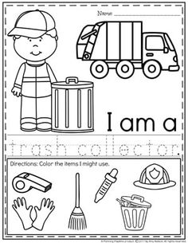
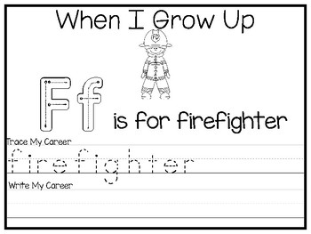
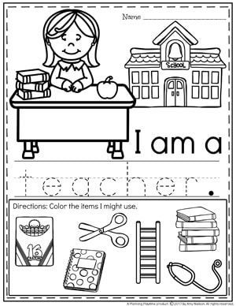
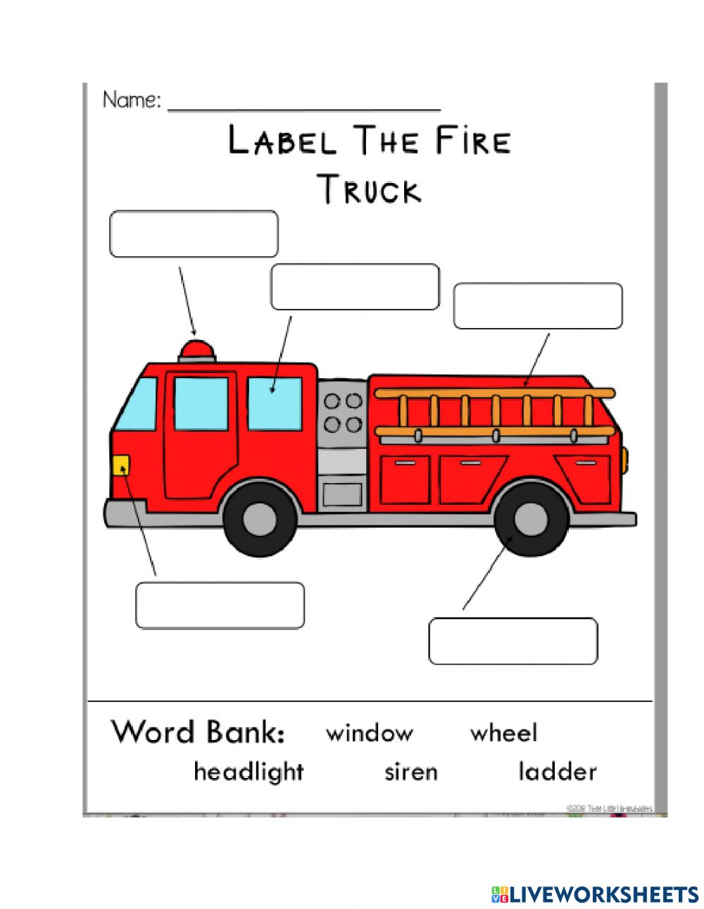
Practical task

Colour in the picture below
Group 2

Water cycle
Colour in the water cycle
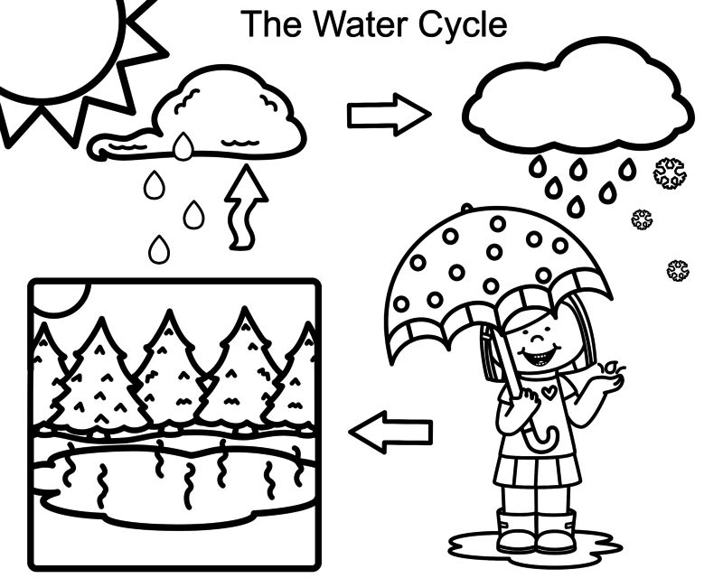
Fill in the water cyle using the following words
land | rain | sun | Clouds |
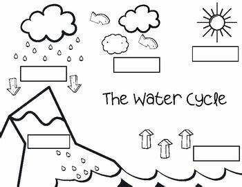
Colour the picture below and write one sentence about the object

- ________________________________________________________________________________________________________________________
Group 3

Answer the following questions given in the worksheet on water and its uses:
- Why do we not drink sea water?
______________________________________________________________________________________________________________________________
- Name three things for which you use water.
______________________________________________________________________________________________________________________________
- How can we kill germs in our drinking water?
______________________________________________________________________________________________________________________________
- What is one way in which people pollute water?
______________________________________________________________________________________________________________________________
- Name the three forms of water.
______________________________________________________________________________________________________________________________
Fill in the blanks using the words below
thirsty | Fire | Electricity | water | bath |
water | needs | Food | water | Baoting |
1. Water is also one of basic _____________.
2. Plants need water to prepare their ______________.
3. We do ____________ in water.
4. Animals take a _____________ in the water of rivers, ponds or lakes.
5. We use ____________for cooking and washing.
6. You drink water when you are ______________.
7. Water is needed for putting-off _______________.
8. Plants need ______________ to grow.
9. You should not waste _______________.
Water in our world
What do we use water for?
cooking | farming | washing Clothes | washing hands | car wash |
cleaning the house | gardening | drinking | bathing | generating electricity |
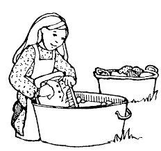
________________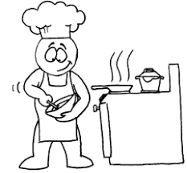
_________________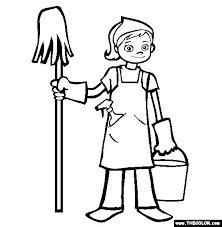
_________________________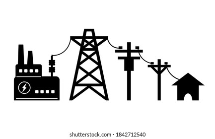
_______________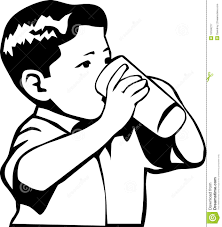
_______________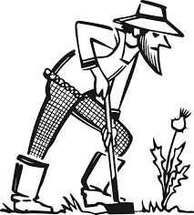
_________________________________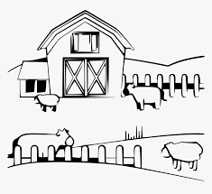
___________________________________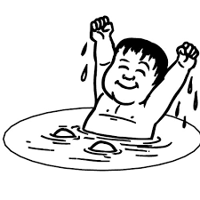
__________________________________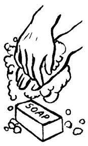
___________________________________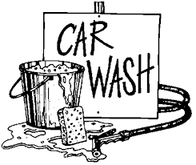
_______________________________Theme
Our country South Africa
Group 1 
Colour in the South African flag
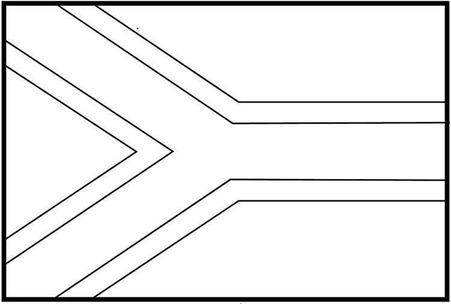
Point out and name the official languages in South Africa
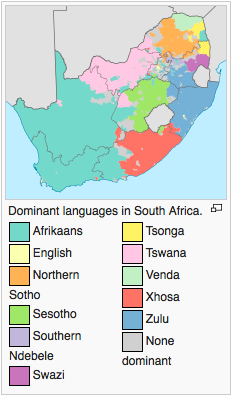
- Ndebele
- Northern Sotho
- Sotho
- SiSwati
- Tsonga
- Tswana
- Venda
- Xhosa
- Zulu
- Afrikaans
- South African English
Colour in the national bird
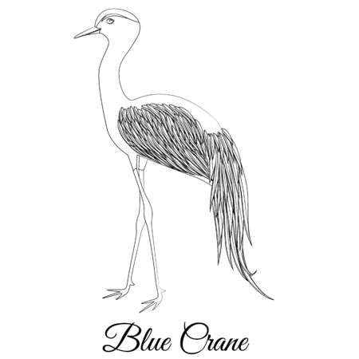
Group 2

Write down the different colours of the South African flag
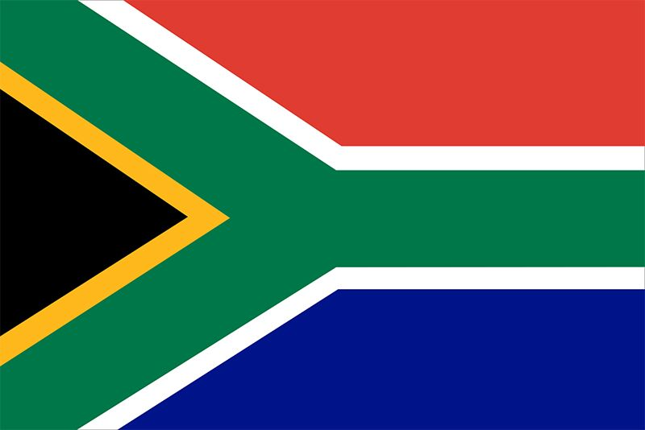
- _________________
- _________________
- _________________
- _________________
- _________________
- _________________
 Our country South Africa
Our country South Africa
Fill in the blank spaces in the sentences
South Africa | languages | South African | Gauteng |
isiZulu | National Anthem | Food | braai meat |
- My country is ____________________.
- We have eleven 11 official _______________in South Africa.
- I am proud to be a _________________________.
- I live in _______________province.
- My home language is _________________.
- I can sing the ______________________.
- We have different traditional ________________.
- My favourite South African dish is __________________.
Rewrite the following sentences in the workbook
- We have beautiful animals in South Africa.
____________________________________________________________________________________________________________
- My favourite animals is a buffalo.
____________________________________________________________________________________________________________
- We have lions, leopards, elephants, buffalo and rhinos in the big five.
____________________________________________________________________________________________________________
- Our country is a diverse country.
________________________________________________________________________
- We love and respect each other.
________________________________________________________________________
Group 3

 Fill in the missing letters
Fill in the missing letters
- So__ __h Af__i__a
- Ga__te__ng
- C__ __nt__y
- La__g__ ___ge
- Na__io__al bi__d
- Ra__ds
- Ra__ __bo__ na__i__n
- Bi__ fi__e
- Di__ __rsi__y
Handwriting
`
Rewrite the following fun facts about South Africa in the workbook
- South Africa is the only country in the world with 3 capital cities.
________________________________________________________________________________
- You can swim with penguins in South Africa.
________________________________________________________________________________
- South Africa is the second largest producer of fruit on the planet.
________________________________________________________________________________________________________________________
- The Table Mountain is one of the world's oldest mountains.
________________________________________________________________________________________________________________________
- Tugela Falls is world's tallest waterfall.
________________________________________________________________________________
Name the nine provinces in South Africa
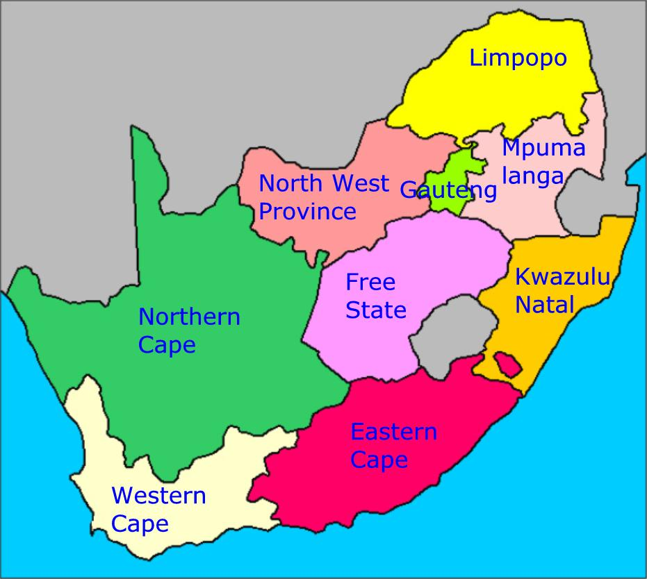
- _______________________
- _______________________
- _______________________
- _______________________
- _______________________
- _______________________
- _______________________
- _______________________
- _______________________
Theme
Communication in our world
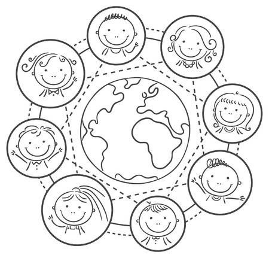
Introduction What is communication?

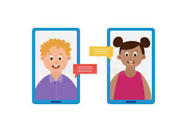
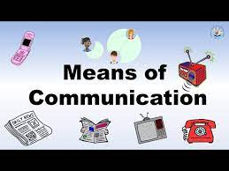
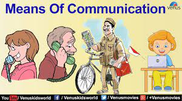
Group 1
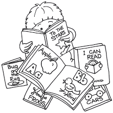
Colour in the telephone picture and tell the class what we use it for.
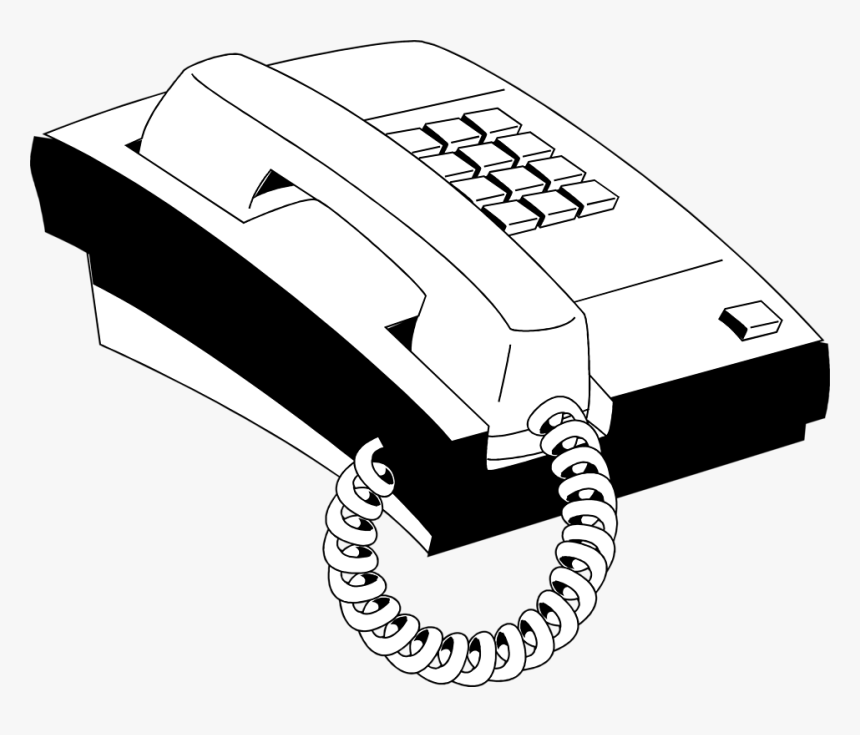
Colour and trace the pictre below
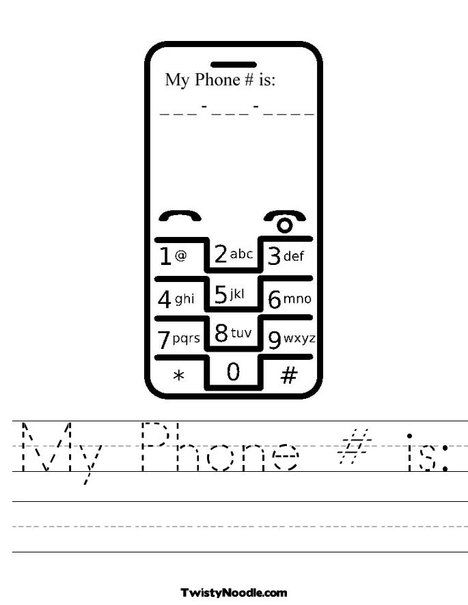

Different forms of communication
Name five (5) different forms of communication

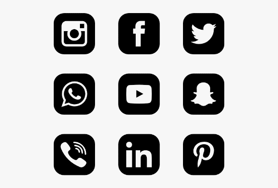


- ________________________
- ________________________
- ________________________
- ________________________
- ________________________
Answer the following questions with true or false
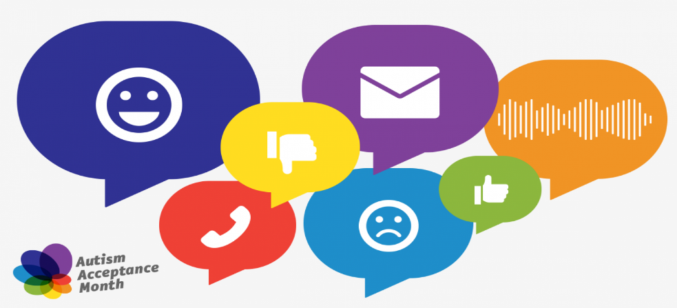
- We can communicate with each other using cellphones.______________
- We can communicate with other people even when they in another country.___________
- We can not communicate through the radio._______________
- We also communicate with family and friends through social media.____________
- If you do not have social media you can not communicate.____________
- You need money to communcate with your loved ones._________________
- We can also communicate verbally with people.___________
- Communication is not necessary.___________
Handwriting
Rewrite the following sentences
I can chat with my friends on my laptop. |
I can talk on the phone with my family. |
My teacher reads the newspaper everyday. |
I love listening to the radio. |
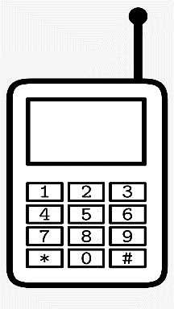 
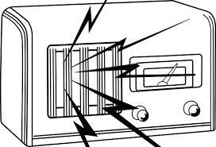 |


Communication in our world 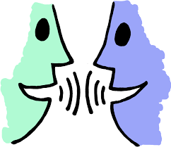
What is communication?
____________________________________________________________________________________________________
Write five ways in which communication takes place.
- ___________________________
- ___________________________
- ___________________________
- ___________________________
- ___________________________
Practical task
Role play any play that consists of verbal communication with a peer.
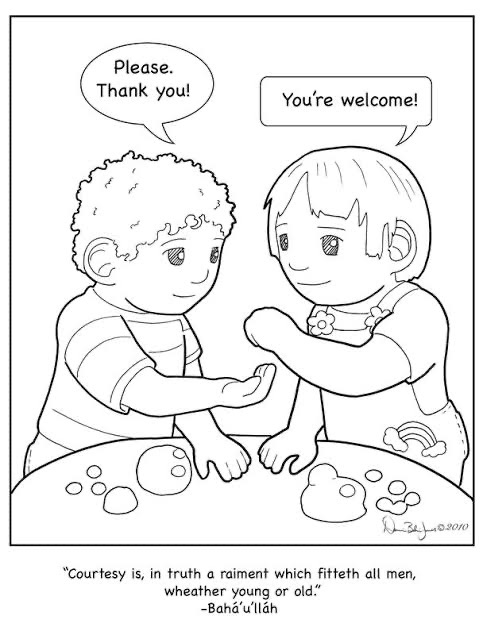
Answe the following questions with true or false
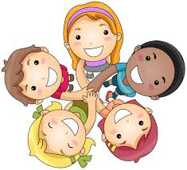
- We can communicate with each other using cellphones._____________
- We can communicate with other people even when they in another country.___________
- We can not communicate through the radio._______________
- We also communicate with family and friends through social media.____________
- If you do not have social media you can not communicate.____________
- You need money to communcate with your loved ones._________________
- We can also communicate verbally with people.___________
- Communication is not necessary.__________
Theme
Life at night
Group 3

Colour the picture below and tell the class what you see.
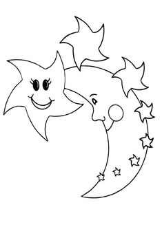
Colour in the picture below and tell the class what you see.

Colour in the picture below and tell the class what you see.


Trace and colour in the moon picture below
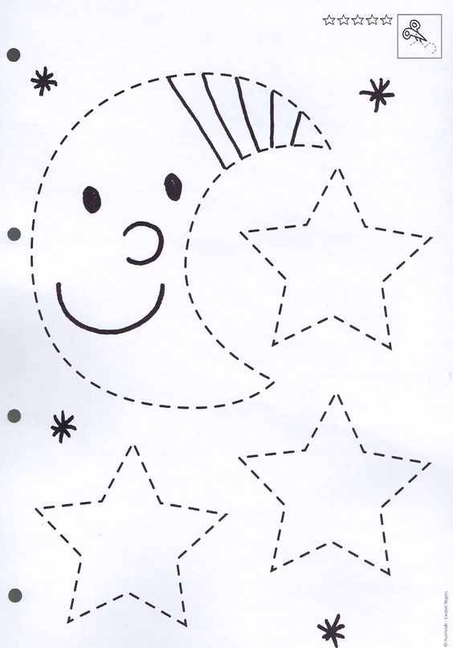
Tick the correct box of what we see at night and during the day and write four (4) sentences using the word night
day night

- _______________________________________________________________________________________________________ _____
- ____________________________________________________________________________________________________________
- ____________________________________________________________________________________________________________
- ____________________________________________________________________________________________________________
Group 3

Write down 4 sentences using the word night
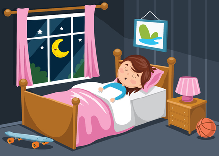
- ____________________________________________________________________________________________________________
- ____________________________________
________________________________________________________________________
- ____________________________________________________________________________________________________________
- ____________________________________________________________________________________________________________
Handwriting
Rewrite the following sentences
My favourite time of the is when I go to sleep. |
My uncle works nightshifts at work. |
I do not play with my friends at night. |
My baby sister has a peaceful sleep at night. |
Colour the images that represent night life and write one sentence for each.
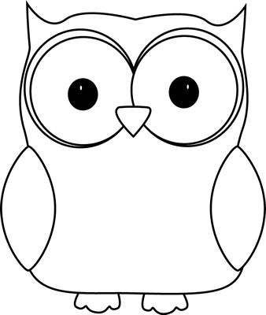

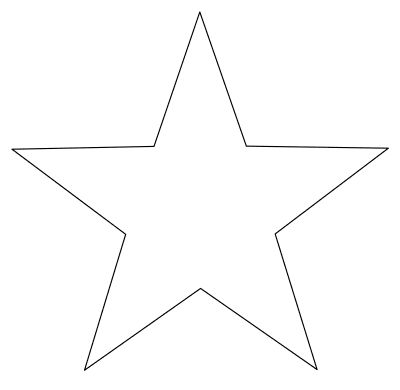
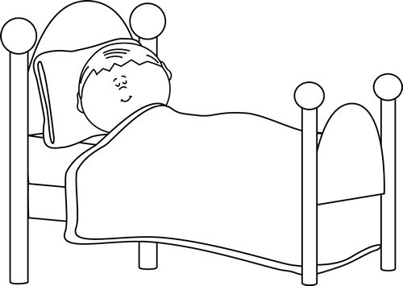
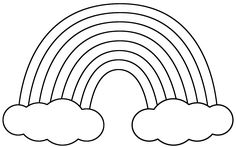
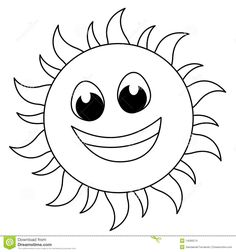

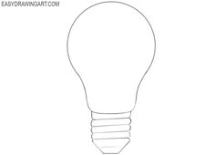
- ____________________________________________________________________________________________________________
- ____________________________________________________________________________________________________________
- ____________________________________________________________________________________________________________
- ____________________________________________________________________________________________________________
Reference list
Chaote, J.S. & Rakes, T.A. 2004.Recognizing Words as Tools for Reading Comprehension.In J.S.Chaote(Ed.).Successful Inclusive Teaching: Proven Ways to Detect and Correct Special Needs. Boston: Pearson.
Cohen, V.L. & Cohen, J.L. 2008. Literacy for Children in an Information Age: Teaching Reading, Writing and Thinking. Canada: Thomson Wadsworth.
Department of Education (DoE). 1997. Curriculum 2005 (C2005). Lifelong Learning for the 21stCentury.Pretoria: Department of Education.
Dole, J.A., Duffy, G.G., Roehler, L. & Pearson, P.D. 1999.Moving from the Old to the New: Research on Reading Comprehension Instruction, Review of Educational Research, 61:239-264.
Moswane, A.P. 2002. Parental Involvement in the Learning of English Second Language among Sepedi-Speaking Communities. University of the North (Limpopo)
The Progress in International Reading Literacy Study (PIRLS). 2006. Online Available:http://nces.ed.gov/survey/pirls/index.asp. Retrieved: 4 March 2009.